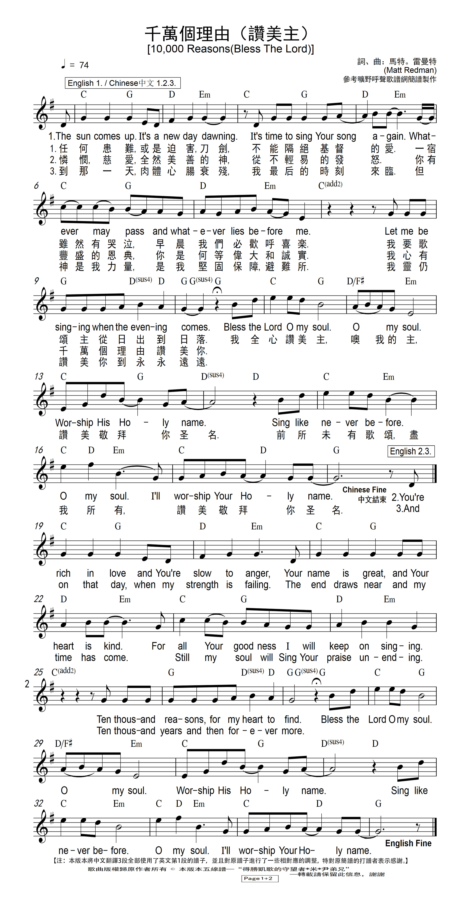

0559 Ten Thousand Reasons 9(10,000
Reasons) _Matt Redman
●
千万个理由称颂主
|
|
中文版10000 Reasons(Bless The Lord)我的靈讚美你 - Matt Redman |
Bless the Lord, oh my soul
Oh my soul
Worship His holy name
Sing like never before
Oh my soul
I'll worship Your holy name
The sun comes up, it's a new day dawning
It's time to sing Your song again
Whatever may pass, and whatever lies before me
Let me be singing when the evening comes
Bless the Lord, oh my soul
Oh my soul
Worship His holy name
Sing like never before
Oh my soul
I'll worship Your holy name
You're rich in love, and You're slow to anger
Your name is great, and Your heart is kind
For all Your goodness I will keep on singing
Ten thousand reasons for my heart to find
Bless the Lord, oh my soul
Oh my soul
Worship His holy name
Sing like never before
Oh my soul
I'll worship Your holy name
And on that day when my strength is failing
The end draws near and my time has come
Still my soul will sing Your praise unending
Ten thousand years and then forevermore
Bless the Lord, oh my soul
Oh my soul
Worship His holy name
Sing like never before
Oh my soul
I'll worship Your holy name |
[Chorus:]
我的靈讚美祢 我全所有
讚美祢的聖名
像第一次開口 盡我所有
讚美祢的聖名
[Verse1:]
太陽升起 新的一天來臨
我心讚嘆 歌唱祢榮耀
不為過去憂愁 也不管接下來如何
在黃昏時 我仍要讚美神
[Verse2:]
因祢是愛 總不輕易發怒
你名為大 心全然善良
因祢的美好 我要揚聲歌唱
千萬個理由只為歌頌祂
[Verse3:]
直到那天 我的氣力衰退
時間終點 已在我面前
我仍要讚美 歌聲不間斷
一萬年後再唱個一萬遍 |
|
http://www.sooopu.com/html/386/386869.html


|
| |
|
|
Short Name: |
Matt Redman |
|
Full Name: |
Redman, Matt |
|
Birth Year: |
1974 |
Matt Redman (b.
February 14, 1974) began leading worship full-time at age 20, serving churches
in Chorleywood, Brighton, West Sussex, and Atlanta, Georgia, where he worked
with Chris Tomlin and Louie Giglio for the Passion Conferences. He is known
for songs such as “The Heart of Worship,” “Better is One Day,” and “Blessed Be
Your Name.” His 2012 song “10,000 Reasons (Bless the Lord),” co-written with
Jonas Myrin, won two Grammy awards in 2013. Redman has written a number of
books, including Mirror Ball and The Unquenchable
Worshipper. He and his wife Beth have five children, and are currently
based at St. Peters Church in Brighton, England.
https://www.ao1groups.com/news/23137/%E3%80%90%E8%B5%9E%E7%BE%8E%E8%AF%97%E6%8E%A8%E8%8D%90%E3%80%91%E3%80%8A%E5%8D%83%E4%B8%87%E4%B8%AA%E7%90%86%E7%94%B110,000-Reasons%E3%80%8B%E4%B8%AD%E6%96%87%E7%89%88
千万个理由称颂主 讚美詩《10,000
Reasons （Blessed the Lord）》
國際上，有許多優秀的基督教讚美詩資源。最近幾年在英文界流行的讚美詩《10,000 Reasons （Blessed the Lord）》就是其中之一。
它的作者是著名的基督徒音樂人Matt
Redman，這位英國的敬拜主領在讚美詩創造上非常有恩賜。同時他對敬拜有非常深刻的理解，他曾經撰寫過1多個的敬拜讀經心得，充滿許多恩典。而他所創造的多首讚美詩有著濃鬱的英式風格，同時讚美風格強烈，總是能夠引起極大的共鳴，在世界各地舉辦過多場敬拜特會，皆讓弟兄姊妹及非基督徒感受最深刻神美好的同在。
![10,000 Reasons (Bless The Lord) [Radio Version] - Radio Version/Live-歌詞-Matt Redman (麥特瑞德曼)-KKBOX](https://i.kfs.io/album/tw/935376,0v1/fit/500x500.jpg)
《10,000
Reasons》雖然歌詞聽起來簡單，但是反複用心吟唱，把從早到晚對於上帝的讚美唱的淋漓盡致，充滿神的同在。Matt
Redman還曾憑借這首歌在2013年獲格萊美當代基督教音樂表演獎。
它的中文版被譯作是《一萬個理由》或《稱頌主》。最近，也有華人把這首歌翻唱成中文，陸續在華人教會流傳開來，安慰和激勵了許多弟兄姐妹。
以下是華人敬拜領袖曾在台灣的新店傳道人的演唱，翻譯為《千萬個理由》，其中的歌詞也翻譯的十分雋永，不僅保留了原文中的菁華，也加入到中文的婉約之風，令人值得咀嚼和
https://churchmusictoday.wordpress.com/2012/08/01/behind-the-song-10000-reasons-bless-the-lord-by-matt-redman-and-jonas-myrin/
While preparing to record his latest album, Matt Redman and friend, Jonas Myrin,
sat down together and wrote what Redman calls “one of the fastest songs he’s
ever been a part of writing”. The song was “10,000 Reasons (Bless the Lord)”
and was written in just an hour. “10,000 Reasons” would later become the title
cut off the album.
The song’s genesis was the melody of the current chorus (written by Myrin) and
the verses were added later by Redman. Though the song was written in under an
hour, Redman doesn’t see that as a negative thing.
“…sometimes songs take so long to write, and I don’t think that’s a bad thing…I
think its a good thing to work hard and learn your craft. You learn to shape
things, polish things, and remold things. But now and again its good when
things drop in your lap.”
The Psalmist was a deep inspiration for Redman: “if you wake up one day and you
cant think of a reason to praise Him, there is something wrong with your
spiritual outlook.”
In my congregation, this song brings a unique freshness to our worship services.
This song is a little “folksy” in its style, yet modern in its progression. We
can open with this song, or sing it as a response. It can be a choir anthem, or
a solo sung by a child or senior adults. Variety of uses within a song is a
true sign of music drenched in the Word and one that will last for years to
come.
“For all Your goodness I will keep on singing, 10,000 reasons for my heart to
find.”
https://en.wikipedia.org/wiki/10,000_Reasons_(Bless_the_Lord)
https://bpcc.com.au/4032-2/
What does it look like to ‘bless someone, with all that is within you?’ It’s a
rhetorical question, but one that I consider when I read Psalm 103. ‘Bless
the Lord, O my soul, and all that is within me, bless his holy name!’ (Psalm
103:1). God alone is worthy of such praise. That is what the Psalmist, David,
means when he said ‘Bless the Lord, O my soul’. He is telling himself to
bless (praise) the Lord, with all that is within Him! It is this beautiful Psalm
that we are exploring this week in the sermon, which also inspired the song
‘10,000 Reasons’ by Matt Redman that we will be singing in our services.
The story behind the song, ‘10,000 Reasons’, gives us all an important reminder
of how and why we should rightly praise God. The story of the actual writing of
the song was uneventful and, in a way, unusual in the fact that it was a fairly
quick process. The song was written within an hour, so the writer says. The
melody was shared from a friend (Jonas Myrin) and the lyrics, mostly from Psalm
103, quickly fell into place. So, the story behind the song writing process is
fairly pedestrian. However, the point behind the song, as writer Matt Redman
puts it, is a whole other story.
Psalm 103 gives these amazing reasons to praise God, including; He forgives our
sins, heals our diseases, redeems our lives from the pit, crowns us with love
and compassion, satisfies our desires and gives righteousness and justice. This
song reflects the words of this Psalm, along with other reasons to praise God.
The point behind the song, as writer Matt Redman says, is this; ‘If
you wake up one morning and you cannot think of a reason to bring God some kind
of offering of thanks or praise, then you can be sure there’s something wrong at
your end of the pipeline, and not his. We live beneath an unceasing flow of
goodness, kindness, greatness, and holiness, and every day we’re given reason
after reason why Jesus is so completely and utterly worthy of our highest and
best devotion.’
What a very honest and very true reminder of where to set our thoughts and our
hopes. We are to set them on who God is and what He has done for us. But more
than that, those reasons to praise Him are the reasons why we have hope! He
forgives our sins! He heals our diseases! He redeems our lives from the pit,
death! He loves us compassionately!
Let’s take this Psalm to heart. Put it on your mirror. Put it on the case of
your phone. Memorize it. Most important of all, take it to heart. Let’s ‘bless
the Lord, with all that is within us!’
https://www.eauk.org/culture/reviews/matt-redman-10000-reasons-and-one-special-song.cfm
https://en.wikipedia.org/wiki/10,000_Reasons_(Bless_the_Lord)
From Wikipedia, the free encyclopedia
"10,000 Reasons (Bless the Lord)" is
a worship song
co-written by the English Christian singer-songwriter Matt
Redman and the Swedish songwriter Jonas
Myrin,[1] first
recorded by Redman for his 10,000
Reasons album, released in 2011 on Kingsway Music, and
subsequently included on a number of compilations, covered by other
artists and included as congregational worship music in English or in
translation around the world. In 2013, the song won two Grammy Awards for
"Best
Contemporary Christian Music Song" and "Best
Gospel/Contemporary Christian Music Performance". After the song's
success and impact, Redman also published a book: 10,000 Reasons:
Stories of Faith, Hope, and Thankfulness Inspired by the Worship Anthem.
Context[edit]
The song is a contemporary version of a
classic worship
song making the case for "10,000 reasons for my heart to find" to
praise God. The inspiration for the song came through the opening verse
of Psalm
103: "Praise the Lord, my soul; all my inmost being, praise his holy
name". It is also based on the 19th century English hymn "Praise,
My Soul, the King of Heaven" written by Henry
Francis Lyte.
Redman recalled the writing of the song was
through an initial idea or suggestion from co-writer Jonas Myrin. Redman
told Worship
Leader magazine: "He [Myrin] played me an idea for some of the
chorus melody, and I found it immediately inspiring. In fact, it felt like
a perfect fit for a song based on the opening of Psalm 103. The song came
together really quickly – a good chunk of the song was actually a
spontaneous moment",[2] adding
that the song reiterates how "we live beneath an unceasing flow of
goodness, kindness, greatness, and holiness, and every day we're given
reason after reason why the Lord is so completely and utterly worthy of
our highest and best devotion".[2]
The song enumerates various attributes of
the love of God for mankind that makes him worthy of "praise unending",
worship for "ten thousand years and then forevermore". The song uses these
attributes: God's holiness, lovingkindness, slowness to anger, kind heart,
His goodness and His great name.[3] The
"10,000 Reasons" concept is used in two citations in the song: First in
the lyrics "Your name is great and Your heart is kind / For all Your
goodness, I will keep on singing / Ten thousand reasons for my heart to
find" and the second at the lyrics: "And on that day when my strength is
failing / The end draws near and my time has come / Still, my soul will
sing Your praise unending / Ten thousand years and then forevermore".
The refrain says:[4]
Bless the Lord, O my soul,
O my soul, worship his holy name.
Sing like never before, O my soul.
I'll worship your holy name.
Music video[edit]
A music video was filmed in a church setting
in Berlin, Germany. The black and white video, filmed by Andy Hutch of
Yodo Creative in 2012, shows Redman singing and playing the guitar
accompanied by an acoustic music band and a number of backing vocalists.
"10,000 Reasons (Bless the Lord)" was
released in 2012 as a single and spent 16 weeks at the top spot on
Christian Radio and remained No. 1 on the Billboard Christian
Songs Chart for 13 weeks[5] and
was certified gold. The album containing the song as its title track
peaked in its own right on the US Christian Album chart at No. 1.[6][7] and
No. 149 on the UK charts.
Weekly charts[edit]
Decade-end charts[edit]
The song has been covered by a number of
artists and bands including:
- Irish worship band, Rend
Collective, in their 2013 album Campfire.[16]
- Contemporary Christian music group The
Katinas in their 2014 album Sunday Set,[17] accompanied
by a music video[18]
- The vocal quintet Veritas in
their self-titled 2014 album Veritas[19]
- The Christian reggae band Christafari in
their 2015 album Anthems. Their version features additional
vocals by Avion Blackman. The release was accompanied by a music video.[20]
At Passion 2014 in Houston, it was sung by
the song's co-writer Matt Redman[21] and
Passion 2015 Houston featuring vocals from Chris
Tomlin, Brett
Younker and Kristian
Stanfill.[22]
Parts of the song was incorporated by
rapper KB as
part of his track, "10k", on his 2020 album His
Glory Alone.[23] It
peaked at No. 36 on the Billboard Hot
Christian Songs chart.
The song has been translated into a number
of languages. It was recorded in Spanish as "Diez Mil Razones (10,000
Reasons)" by Evan
Craft in an acoustic version in his 2012 album Yo Soy Segundo.[24][25] and
in German as "Zehntausend Gründe" ("10,000 Gründe") by the German
Christian band Outbreakband and
recorded on their album Das ist unser Gott, a live album performed
at the Glaubenszentrum Bad Gandersheim.[citation
needed]
The book[edit]

Cover of 10,000 Reasons: Stories of Faith, Hope, and
Thankfulness Inspired by the Worship Anthem
Matt Redman co-authored with Craig Borlase
the book 10,000 Reasons (full title 10,000 Reasons: Stories of
Faith, Hope, and Thankfulness Inspired by the Worship Anthem). In the
176-page book published in 2017 by David C Cook Publishing Company, and a
foreword written by Christian author Max
Lucado, Redman shares details behind the song's creation and explores
the influences and experiences the song generated with many vivid examples
of inspiring stories, experiences and testimonies by individuals in their
greatest time of need.[26]
Certifications